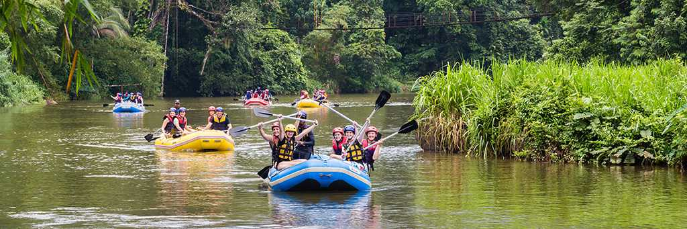
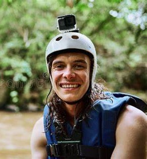

"Wild Rapids Tours in Oaxaca, Mex.: Your Premier Whitewater Experience" Dive into the thrill of a lifetime with Wild Rapids Tours! Nestled in the heart of Oaxaca's stunning landscape, we offer exhilarating whitewater rafting experiences tailored for adventurers of all levels. Whether you're seeking the rush of navigating Class IV rapids or a serene float down scenic rivers, our expert guides ensure your safety and fun. Join us for unforgettable memories, breathtaking nature, and the ultimate outdoor adventure. Ride the rapids with us!


Wild Rapids Tours
History
"A Journey Through Time" In the summer of 1995, adventure enthusiast Carlos Rivera found himself captivated by the untamed beauty and roaring rapids of Oaxaca's rivers. Inspired by the thrill of whitewater rafting and the majestic landscapes, Carlos decided to transform his passion into a business. Thus, Wild Rapids Tours was born. Starting with just a couple of rafts and a small team of dedicated guides, Carlos embarked on his mission to share the exhilarating experience of whitewater rafting with others. Word quickly spread about the unforgettable adventures offered by Wild Rapids Tours, and the company grew rapidly, becoming a favorite among locals and tourists alike. As the years went by, Wild Rapids Tours continued to expand, offering a variety of rafting trips tailored to all levels of adventurers—from beginners seeking a gentle float to thrill-seekers craving the rush of Class IV rapids. The company also embraced eco-friendly practices, ensuring that their love for adventure was matched by their commitment to preserving the natural beauty of Oaxaca's rivers. Today, Wild Rapids Tours is a renowned name in the rafting community, celebrated for its exceptional guides, top-notch safety standards, and unforgettable experiences. Carlos's dream lives on as new generations of adventurers join Wild Rapids Tours to create memories, conquer challenges, and discover the wild wonders of Oaxaca.